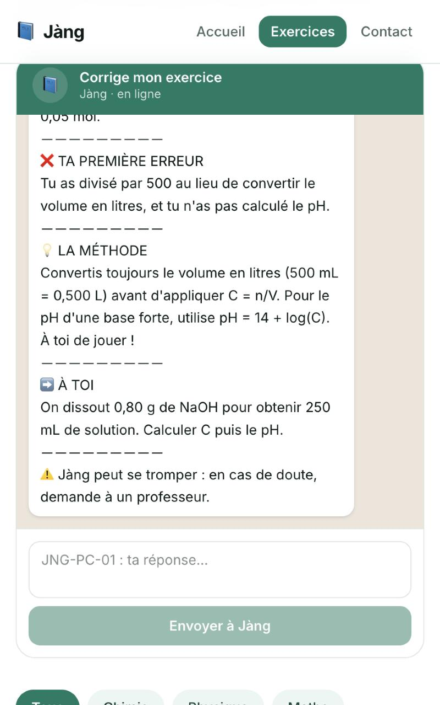

Jàngcorrecteur d’exercices du Bac sur WhatsApp
PhysiqueChimie
Vous enseignez la physique-chimie ? Offrez 1 heure à vos futurs élèves.
Aidez-nous à valider les 14 corrigés de référence de Jàng pour la Terminale S2. Ils sont écrits par notre équipe et en cours de validation par des professeurs.
-
1
La première erreur, d’abord
L’élève voit où il s’est trompé, pas seulement une note.
-
2
Un corrigé de référence
Puis la méthode, relue par des professeurs grâce à vous.
-
3
Un exercice similaire
Pour réviser seul, le soir même, sur son téléphone.
ta première erreur, d’abord !

Capture réelle de notre prototype. Jàng peut se tromper : en cas de doute, demande à un professeur.
Ce que
nous vous
demandons
1 heurepour relire les 14 corrigés de référence.
À distancedepuis chez vous, sur votre téléphone ou ordinateur.
À votre rythmeen une fois ou en plusieurs fois.
Date limite de réponse : [date à définir]
E-mail : [e-mail à définir] · WhatsApp : [numéro à définir]
E-mail : [e-mail à définir] · WhatsApp : [numéro à définir]
Je donne 1 heureÉcrivez-nous, nous vous envoyons les corrigés.